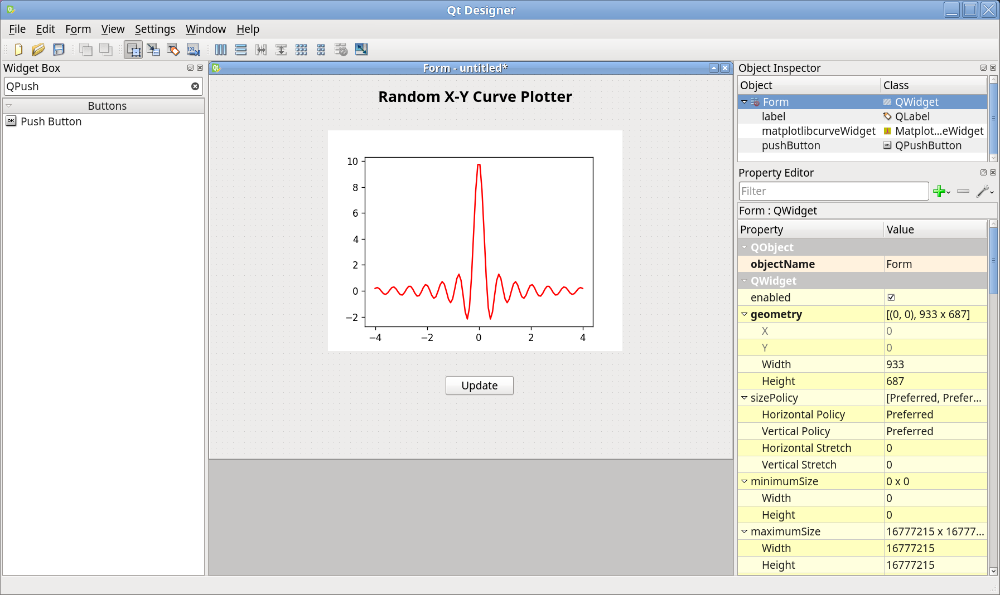
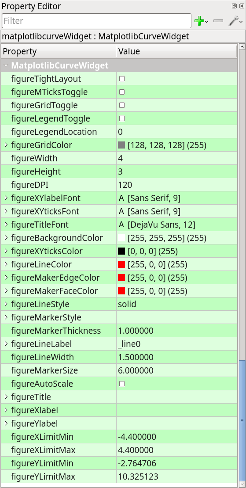
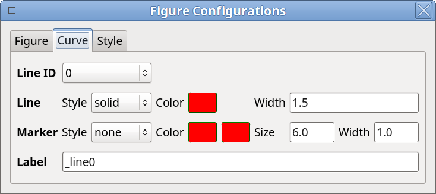
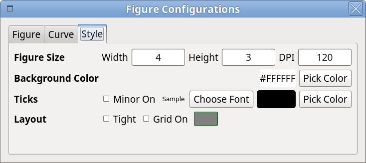
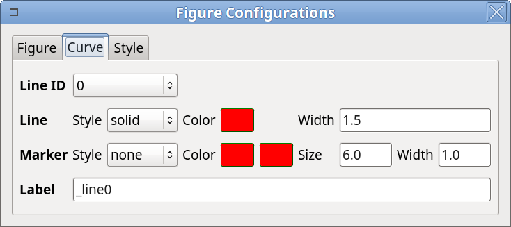
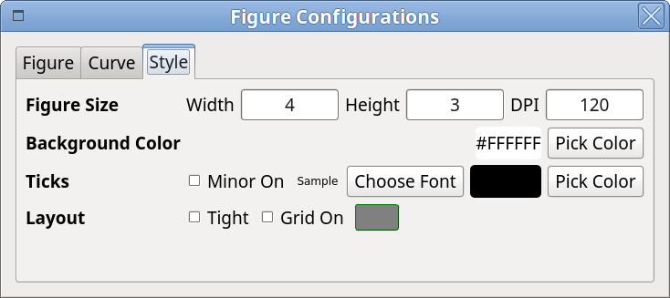
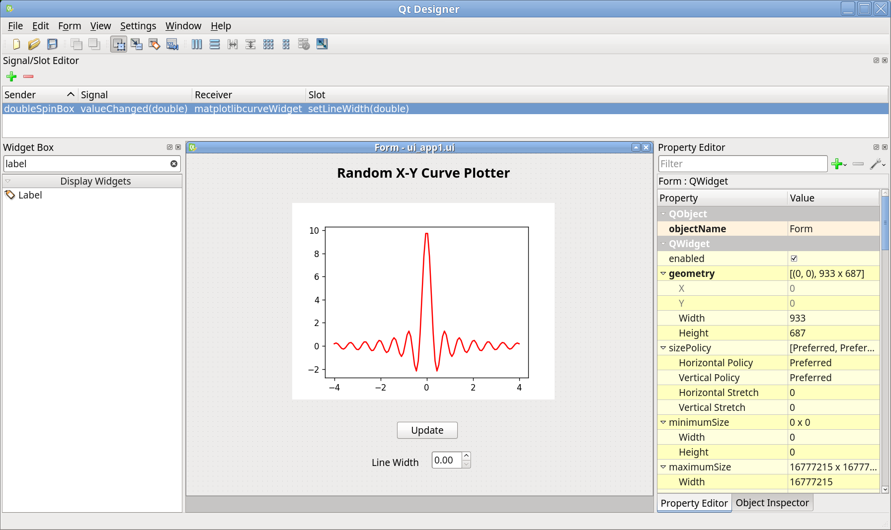

Getting Started¶
In this section, general guidelines about developing PyQt application with
mpl4qt will be addressed, starting the development with the following
applications:
Start Qt5-designer¶
designer is a user-friendly GUI application to help the developer to build
UI painlessly, in a WYSIWYG way. The created UI file from designer is
structured XML file, which could be parsed by Qt libraries to show the UI in
the Qt applications, however, it is designed for both C++ and Python, so if
you’re working on the PyQt application, another command named pyuic5 could
be used to convert the UI file into Python module, which could be imported by
your PyQt application. There is a way that at the runtime, the UI file could be
loaded into to render the GUI, but it is recommended that always converting
UI file to Python module before runtime, since there might be chances that
different PyQt versions would be applied between development and runtime.
After installing mpl4qt, simply type run_designer in the Linux
terminal to launch designer:

As one can see, in the Widget Box column, a new category of so-called DataViz Widgets is shown, inside which there is one widget called MatplotlibCurveWidget, which is ready to be dragged&dropped.
Warning
If the following error message happens: qtcore.so: undefined symbol: pyslice_adjustindices, could be resolved by uninstalling pyqt5 package by pip uninstall pyqt5, and installing the OS distributed one, see Install mpl4qt.
Random X-Y Curve Plotter¶
What does this application do? This app will make the most of MatplotlibCurveWidget, to show how the figure properties could be controlled interactively, and how the curve could be updated.
Create a New Application¶
In the designer, click the New icon in the toolbar or menu File → New or Ctrl + N to create a new project for the new application:

One can choose Screen Size, but leave it as Default size is OK, the size could be adjusted later, click Create button will lead you to the form workspace. Adjust the form size by dragging the form border.
Place Widgets¶
All the widgets in the Widget Box column could be dragged and dropped to the form space to serve with different purposes, e.g. the Label usually is used to provide the static indication. So we can place a title with Label: drag the Label icon from Widget Box to the form workspace, double-click to name it as Random X-Y Curve Plotter, and in the Property Editor column, simply check out some items to make it look better, e.g. set Point Size as 20, check Bold, just as the following image shows:

Next, place the MatplotlibCurveWidget into the workspace in the same way, and one button for random curve generation, change the button text to Update.
After that, you’ll get something like this:
{kind=link}
Inside the designer, the initial widget configuration could be edited through Property Editor column, e.g. this is the list for MatplotlibCurveWidget:
{kind=link}
Inspect MatplotlibCurveWidget¶
Before moving forward, let’s first take a look at what does MatplotlibCurveWidget provide, a good way to know is to run this app. Yes, the app is just ready to run.
Save this project by clicking Save icon in the toolbar or Ctrl + S, locate and name it as ui_app1.ui, check out to the location where the ui file is, in the terminal, run the following command to convert ui file to Python module:
pyuic5 ui_app1.ui -o ui_app1.py -x
You’ll get a new Python file generated from ui file, simply run with
python3 ui_app1.py, a window will pop up:

The MatplotlibCurveWidget is designed with the ability to change the figure properties via the context menu, by right-clicking in the figure, choose Config item will guide you to a popup dialog, close it by hitting ESC or clicking Close in the windows title bar.
Here is the list of available options could be controlled via Config menu, just name as a few: line color, line style, line width, marker size, marker style, marker color, labels, as well as fonts, grid, layout, etc.
 



{kind=link}
{kind=link}
Edit Signal/Slot¶
Inside designer, signal and slot could be easily connected to implement features, e.g. let’s add one Double Spin Box to control the line with.
Just like the following image shows:

Then go to Signal/Slot Editor, connect the valueChanged(double) signal of doubleSpinBox to setLineWidth(double) slot of matplotlibcurveWidget:
{kind=link}
Save and convert ui file again, run to see the changes.
Implement Additional Features¶
MatplotlibCurveWidget features a lot of functionality that could be implemented via Qt’s signal and slot mechanism [1]. Some of them could be achieved in designer, but some are not, see Slots. One of the additional fundamental ones is to update the curve, e.g. the Update should be used as the trigger for curve updating, every clicking, here, the curve would be updated with a new sine curve with random noise.
The slot
setYData() could
be used to update the y data of the curve, generally, connecting with
a PyQt signal to this slot will make this happen. However, before writing
some code to the generated Python module, one thing should keep in mind,
that is usually the updating will not be applied directly to that Python file
in place, but by extending it, here is how to accomplish:
Create a new file named as, for instance, app1.py, and inherit the class
which renders the UI, then extend within the new class:
1#!/usr/bin/env python
2# -*- coding: utf-8 -*-
3
4from ui_app1 import Ui_Form
5
6from PyQt5.QtWidgets import QWidget
7from PyQt5.QtCore import pyqtSignal, pyqtSlot
8from PyQt5.QtCore import QVariant
9
10import numpy as np
11
12
13class RandomCurveWidget(Ui_Form, QWidget):
14
15 yDataChanged = pyqtSignal(QVariant)
16
17 def __init__(self,):
18 super(self.__class__, self).__init__()
19
20 # UI
21 self.setupUi(self)
22
23 # update_ydata
24 self.yDataChanged.connect(self.matplotlibcurveWidget.setYData)
25 self.pushButton.clicked.connect(self.update_ydata)
26
27 @pyqtSlot()
28 def update_ydata(self):
29 """Set xy data for the curve figure.
30 """
31 x = self.matplotlibcurveWidget.getXData()
32 y = np.sin(x) * (1 + np.random.randn() * np.random.random(x.shape))
33 self.yDataChanged.emit(y)
34
35
36if __name__ == '__main__':
37 import sys
38 from PyQt5.QtWidgets import QApplication
39
40 app = QApplication(sys.argv)
41 w = RandomCurveWidget()
42 w.show()
43 sys.exit(app.exec_())
One can note how the signal and slot mechanism works:
Define your PyQt signal;
Connect the signal to the specific slot;
Emit the signal when needed.
In this example, the signal named yDataChanged is created with data type
of QVariant, then connected with setYData slot of
matplotlibcurveWidget; next, the clicked signal is connected with the
defined slot update_ydata, in which new y data is generated and emitted.
Run this app by python3 app1.py, and click Update button to see the
updating curve, and change the figure property when needed, e.g. check
Auto Scale on and off (see below), to see the what happen.
{kind=link}
Extended¶
matplotlibcurveWidget also supports multiple curves visualization by the slot
add_curve().
Currently, multiple curves are managed by line ID, the first curve is of line
ID 0, the second one is of line ID 1, and so on. Every time add_curve, the
current line ID will be set of the new added one, so switching line ID is
required to do the data updating for other lines, by
setLineID() slot.

Below is an extended version of app1.py, which supports more operations.
1#!/usr/bin/env python
2# -*- coding: utf-8 -*-
3
4from mpl4qt.examples.ui_app1 import Ui_Form
5
6from PyQt5.QtWidgets import QWidget
7from PyQt5.QtCore import pyqtSignal
8from PyQt5.QtCore import QVariant
9
10import numpy as np
11
12
13class RandomCurveWidget(Ui_Form, QWidget):
14
15 yDataChanged = pyqtSignal(QVariant)
16 addCurveSignal = pyqtSignal(QVariant, QVariant)
17
18 def __init__(self,):
19 super(self.__class__, self).__init__()
20
21 # UI
22 self.setupUi(self)
23
24 # update_ydata
25 self.yDataChanged.connect(self.matplotlibcurveWidget.setYData)
26 self.pushButton.clicked.connect(self.update_ydata)
27
28 # add curve
29 self.add_curve_btn.clicked.connect(self.add_curve)
30 self.addCurveSignal.connect(self.matplotlibcurveWidget.add_curve)
31
32 def update_ydata(self):
33 """Set xy data for the curve figure.
34 """
35 x = self.matplotlibcurveWidget.getXData()
36 y = np.sin(x) * (1 + np.random.randn() * np.random.random(x.shape))
37 self.yDataChanged.emit(y)
38
39 def add_curve(self):
40 x = self.matplotlibcurveWidget.getXData()
41 y = np.sin(x) * (1 + np.random.randn() * np.random.random(x.shape))
42 self.addCurveSignal.emit(x, y)
43
44
45def run():
46 import sys
47 from PyQt5.QtWidgets import QApplication
48
49 app = QApplication(sys.argv)
50 w = RandomCurveWidget()
51 w.setWindowTitle("MatplotlibCurveWidget Example App")
52 w.show()
53 sys.exit(app.exec_())
54
55
56if __name__ == '__main__':
57 run()
The full working example could be downloaded from
here.
BarChart Plot Example¶
What does this application do? This app will visualize the data with bar chart plot by using MatplotlibBarWidget.
The following snippet shows how to use this widget:
The full working example could be downloaded from
here.
Footnotes